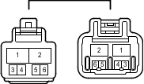

Наименование
Жгут проводов панели приборов и главный кабель моторного отсека (боковая панель с правой стороны кожуха)
Код
GA7
Каталожный номер
90980-10910/90980-10909
Цвет
Черный
Технические характеристики

Расположение
Электропроводка в панели приборов (для моделей с левосторонним рулевым управлением) 1
Электропроводка в панели приборов (для моделей с правосторонним рулевым управлением) 1
Система
Система кондиционирования
Динамическая радарная система круиз-контроля (для моделей с 1GR-FE)
Динамическая радарная система круиз-контроля (для моделей с 1KD-FTV)
Индикатор ECT и A/T (для моделей с 2TR-FE)
Система управления двигателем (для моделей с 2TR-FE)
Передние стеклоочиститель и стеклоомыватель (для моделей с правосторонним рулевым управлением и автоматическими стеклоочистителями)
Передние стеклоочиститель и стеклоомыватель (для моделей с правосторонним рулевым управлением без автоматических стеклоочистителей)
Точки соединения с массой
Цепи электропитания